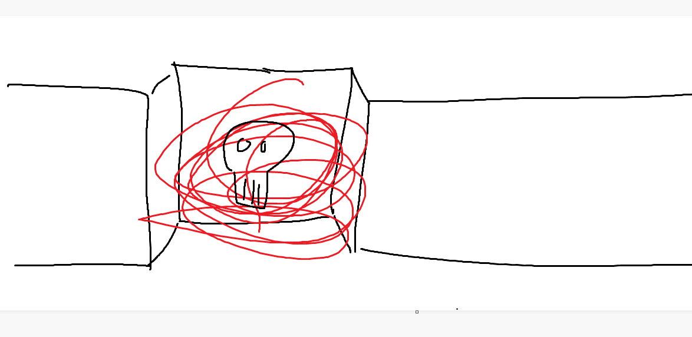

Dungeon Domain
The Drunk Guy's Cousin
8th September 2024
Melkor has just killed a Doppelganger together with the innkeeper Arl Bortock. Do you think you can rest easy now? You're wrong...
Fenris is hung over, Kalilia is visiting her wife and Melkor is speaking with the interesting new individual in the inn. Even though they seem to have very few things in common, the Tabaxi whose name is Quill agrees to join the party. Suddenly, a drunk guy storms into the inn, followed by another smaller individual. The drunk guy is searching for adventurers, or heroes, who can help him with the drama between him and his cousin. He explains that Nim had promised him that he could find adventurers in the inn, and when the party explains that they might be the ones he is searching for, he starts to explain his dilemma: His cousin stole his amulet long ago, and he has been furious about it ever since. He has been trying to contact him and try to get him to give back the amulet, but to no success. The "drunk guy's" speech is rather slurred due to the fact that he is drunk and has trouble organizing his thoughts. He explains that he wants the party to kill his cousin, and points in the direction of where he lives.
The party goes in the same direction and knocks on several doors before they eventually decide to enter an unlocked house where no one seems to be home. They search through the house, and Kalilia manages to find a letter where the house owner seems to have plotted some things with another unknown person. There is a chest standing in the same room as the letter was found and is filled with treasure. On top of the treasure, there is a note with a few words scribbled on it: Don't open if you aren't me.
The party decides to go out of the room and shoot a projectile on the treasure. The entire chest blows up, leaving nothing but ash left in the room.
The party finds a staircase leading down to the basement, a dark place filled with rusty weapons and armour pieces. However there is something else of much more importance in the room that the party manages to find: an entire mind map with plans on how to take over Palebank Village. After a successful perception check, they find a stone that looks a bit different than the rest of the stone that make up the basement's walls. Pressing the stone reveals a small room filled with blood and corpses, which they do.
Character(s) Interacted With
- Arl Bortock
- Drunk Guy